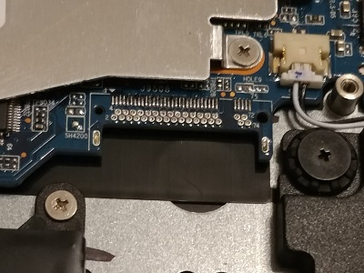
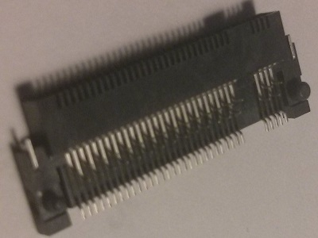
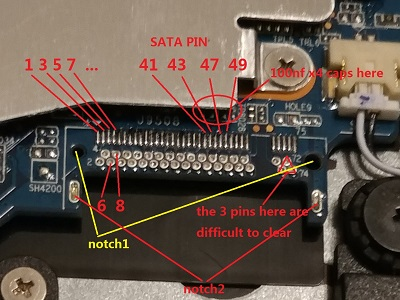
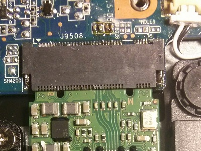

One day I found the 120s on sale, and bought it. However, when I was searching the upgradability of this compter, things became more interesting. It turns out that the predecessor 110S has an empty M.2 slot that can be easily used to expand the hard drive capacity. But for the 120S, the M.2 is missing. So I decided to try to add the connector myself. You can find the ongoing discussion in the lenovo forum [LINK Here].
The picture below shows the empty slot near the battery

empty slot
By inspecting the slot carefully, I found out that the edge connector to use could be [SM3ZS067B120AM2R1500]. However, I was unable to find a retailer for this connector. Then I found another connector [AS0BC56-B15BM-7H]. After the ordered samples arrived (shown in picture below), I started the experiment.

AS0BC56-B15BM-7H
Unfortunately there are 4 x 0603 100nf capacitors also missing, they are right beneath the CPU heatsink.

AS0BC56-B15BM-7H
The following is my exact steps to add the connector:
Warning: Do not attemp this if you are not sure what you are doing! Accidents may result in destoryed motherboard, or even causes injury. Two other enthusiasts have not reported success with the same connector that I provided, so it can be assumed that they failed.
1, Unscew the bottom and the motherboard, then take out the motherboard and remove the heatsink. I lift the motherboard without taking out the battery and usb board. You could do that if you want to be on the safe side.
2, Use solder wick to remove the solder from pads (upper row: 1,3,5...75) gentely. Apply flux when necessary, I used Rosin instead.
3, use heat gun to blow the through holes (lower row: 2,4,6...68) on one side of the motherboard, once the solder inside the holes is melt, suck it out with solder sucker from the other side asap. This is the most difficult step for me, since pin 70,72,74 are grouped on the power rail together it takes a while to melt. I don't want to use temperatures that are too high to burn the board. If you manage to finish this part, then basically you are done.
4, clean the board and solder the connector, for my connector, I had to apply a little force for the socket to fit in notch1. I didn't clear solders in notch2 because my connector don't need to go through there.
5, solder the 4 capacitor for sata line.

AS0BC56-B15BM-7H
Finally I managed to install the socket on the slot, not perfectly fit though. I installed a 24GB sata ssd just for testing and it worked. the port supports sata 3.0 6gb.